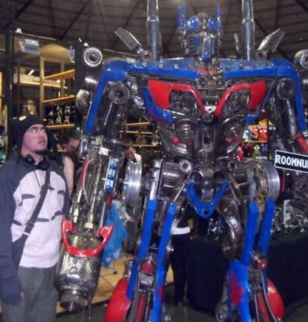
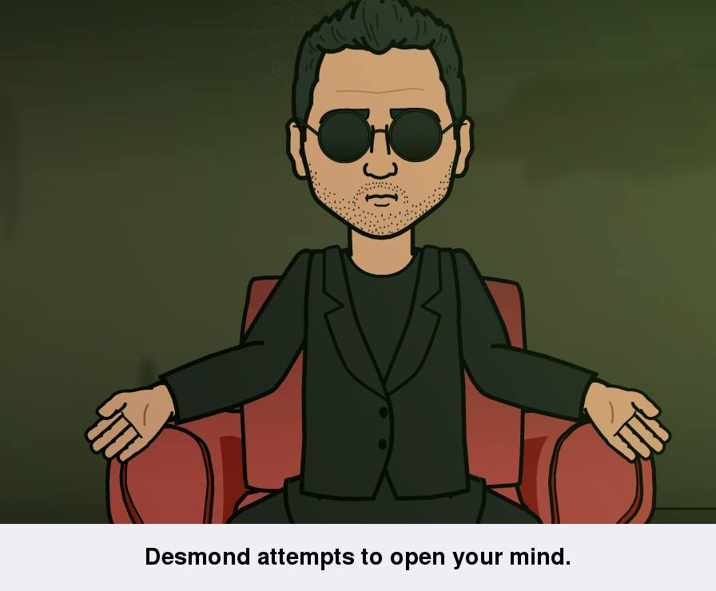
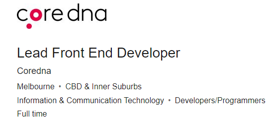
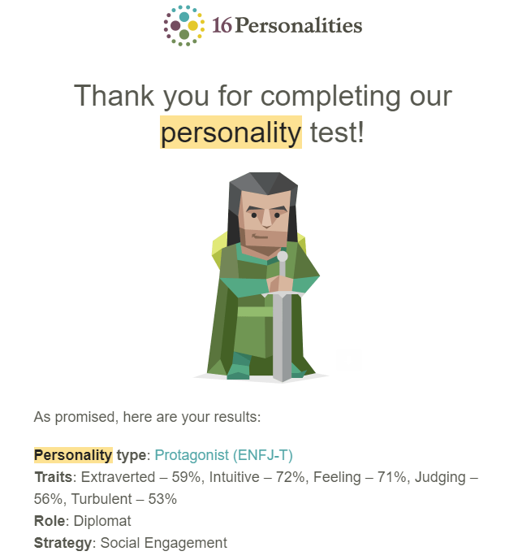
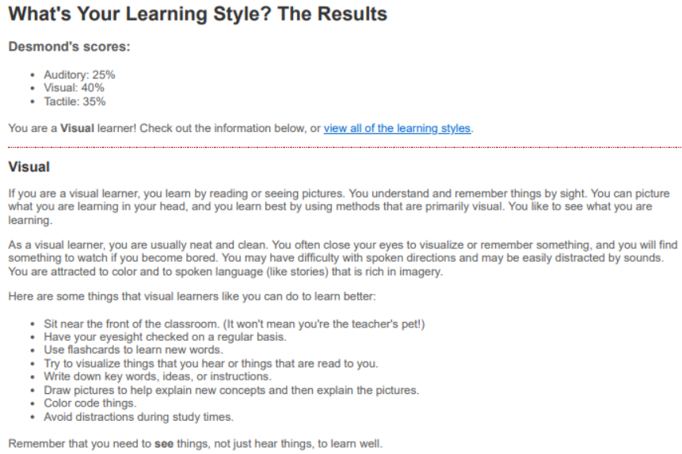
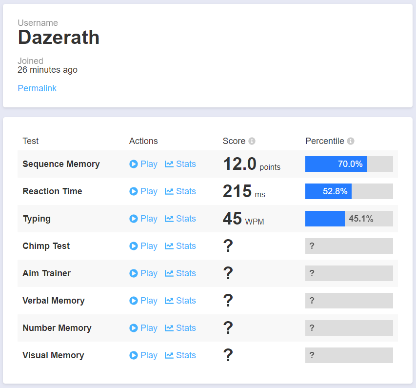

About me

Greetings,
My name is Desmond Knowles, I’m 34 and from New South Wales. I was born in Auckland,
New Zealand and moved to Australia when I was 3 years old. I am part Cookislander, Niuean
and caucasian. Most people aren't familiar with Niue so I'll explain that Niue is a small
Island nation in the Pacific just west of the Cook Islands. I enjoy playing video games,
watching sci-fi and anime, karaoke and playing guitar.
Interest in IT
I’m not absolutely certain when my interest in Information Technology first started. But I believe I’ve had an interest in technology from a young age. I loved electronics class in early high school, where we were able to solder things together to make a little device. I’d take things apart as a kid, I was probably interested in the way things worked. I've been a big fan of sci-fi since I was a child and always found all the talk of technology very interesting. As an adult, things haven’t really changed. If anything, it’s gotten worse! I like to keep up with new tech, I like to fix some basic tech at home like friends and family’s PCs, Laptops and other small electronics. I usually take care of the internet and home networks for me and my family and they all usually come to me for basic tech related problems. Now all I need to do is get someone to hire me so I can get paid to do all this!
I had been wanting to study for a while. I honestly should have done it during lockdown as I had lost my job and was just looking for something IT work related to do during the pandemic but was unsuccessful. I decided to just take the plunge, and it wasn’t even 4 weeks and class had started, it actually felt like barely a week. So I had been wanting to study and I had a look at all the Universities near me, did a bit of research on them all and what they offer. As I still wanted to find some work while I studied I thought I could save some time off travel if I just study online. This is where I decided to contact Open Universities Australia, after a discussion with them, they recommended RMIT. I had a look at what there was to offer and it seemed like a good choice. So here I am and so far, I’m enjoying it.
During my studies here I expect to learn what I need to start a career in an IT field. I also would like to learn enough about the different fields in IT to help me decide what path in my career I should take. I don’t have any work experience in IT so getting as much exposure to different IT fields I believe will be very beneficial. I’ve worked at the same place for roughly 15 years in an industry where there isn’t really much progression, and the progression that can be made didn’t really interest me. What I’m looking for is some real progression, in an industry that is interesting to me and to be happy where I am. Money is an obvious motivator, but only to an extent.
Ideal Job
Lead Front End Developer
The job I have chosen as a possible future career path is Lead Front End Developer. In this role, you will be leading a team in building the web interface that people will interact with. The reason I chose this is because I think I would not only be good at, but I believe I would enjoy front end development. I love technology, I am very aware when some software or a website I am using isn’t very intuitive, and I usually make a bit of a list of things I would fix in my head or other examples of better user interfaces come to mind. I believe that learning about the intuitive user experiences people have created and allowing me to create my own would be very rewarding.
The skills and experience required for this career path, listed in the job advertisement, are a minimum 7 years front end development experience that includes HTML, CSS and Javascript. They also may need experience in graphic design applications and a bachelor’s degree in computer science, Information Technology or something equivalent. For a lead position in most things, excellent communication is a must, whether it’s conveying ideas to your team, your bosses or your customers, or actively listening to and taking in their ideas, communication is key.
I am currently working through a bachelor of Information Technology, I have a cert IV in Information Technology which covers some basic HTML and CSS. I have some basic knowledge of Linux, I use windows on a daily basis and often diagnose problems for myself, family and friends. I have a good understanding of MacOS, iOS and Android operating systems. I’ve got hands-on experience with basic home networks as well as my own server that I have run virtual machines and server based operating systems like Windows Server 2012 and 2016. My 15 years in an immigration service role has granted me very good communication skills.
I believe that gaining as much experience as I can will help me with my career path. I am committed to completing my studies and will put my best foot forward in achieving my goals. Starting with completing this bachelor of Information Technology, finding myself an entry level position in an IT field for the experience. Taking advantage of the possible employee benefits for learning and gaining more skills. Listening and taking advice from others in the workplace with more experience than me to help guide my path. Being open and honest with myself with anything I am doing or want to achieve.
Personal Profile
Myers-Briggs Test - Click here to see my results!

TYPE: Turbulent Protagonist
CODE: ENFJ-T
ROLE: Diplomat
STRATEGY: Social Engagement
EXTRAVERTED INTUITIVE FEELING JUDGING TURBULENT
The test labels my type as a 'Turbulent Protagonist' and explains that protagonists strive to have a positive impact on people and the world around them. I do believe this is true of me, and at the very least I wouldn't wish anything bad of anyone. It also says that protagonists are born leaders and that their passion and charisma allow them to inspire others. I've been in leadership roles, and I do believe I have performed my duties well, but confidence goes a long way when leading people. If I have a passion for something, I usually have a lot of confidence in myself and in leading others in that position. In saying that, I think I also do well at supporting others in leadership positions. It can be easier to perform better at a task when you have less pressure which can help you see the task from a different point of view.
Learning Style Test - What's Your Learning Style

This learning test scores me a Visual learner, which it decribes as someone who learns by reading or seeing pictures. Although I
think I am able to learn in many different ways, I do agree that this this way has worked for me. The results for this
test does outline some things visual learner can do to learn better, I am interested in trying these things out. Perhaps
these suggestions may even help learn better in a team, perhaps this might even help form a term better if everyone
learned better the same way.
Human Benchmark
This is a website called 'human benchmark', it tests out various things like number memory, sequence memory,
verbal memory, reaction time, a typing test and others.
Something like the typing test I think would definitely help you get a certain job like data entry.
So much of what we do in the world today involves computers and typing, so I believe this would help
you in many aspects of your life. The other tests like memory or reaction time could help train your mind and
reflexes which could also have a generally good influence on everyday things. I think knowing how fast all
members of a team would generally help with dictating tasks so it would be beneficial in a team environment.
Project Idea
My idea is to create a simple website/web application and/or smartphone app to help people find entry level positions for employment. A place for those just starting out in the workforce or changing careers. Joining the workplace or changing careers I think can be a very daunting process for anyone. I feel that creating a recruitment place just for this particular criteria might help people get the jobs they want. I hope that it makes it easier for people to start working in general and that it helps recruiters to use this resource to find the employees they are looking for.
What is my motivation? After working in the same job for 15 years, I wanted to work somewhere else, but there are certain things that make it hard to find a new job. One of these reasons is getting comfortable where you are, you could make plenty of money to live a comfortable life, but that doesn’t mean you’ll be happy. Feeling like you’re too old to make a change in your career is another reason. I felt like I might’ve been getting too old to study something new, I’m currently 34. I have a mate, who at 30, started and completed his teaching degree and is now a highschool teacher. He was sick of working random dead-end jobs and just took the plunge. That right there is a big motivation for me to try something new.
Let me give you a bit more information on what I want to build. Sure there are job recruitment sites out there but having a dedicated place for those looking to change careers or start a new one, I think recruiters would be more willing to give people a chance in a place like this. We can also provide simple resources about the types of jobs that are available in your area, what kind of career path those jobs can provide you and tips on changing careers. Obviously we’d also provide some of the basic information about careers that other job search sites provide, but our service will be less overgrown with things those at the beginning of their career wouldn’t need. I want it to be a resource that can teach those who are new to the workforce what they need to do to get into the type of work they are looking for. Right down to the basics, other recruitment websites expect your resume to look a certain way, expect you to use certain types of jargon that someone new to the workforce wouldn’t necessarily understand. We could even get right down to teaching those that are very new about what to wear in an interview depending on the type of job, company or based on what they say to wear for the interview such as “smart casual, etc”. We could also list places that sell clothing that is near you, affordable and would suit most interviews. I want to make this service intuitive for not only for the employees but the employers as well, with a resume format that helps you to convey your personality and to highlight attributes about yourself as you may have no or little relative working background for the job you are applying for. At the same time, recruiters will have to place their recruitment posts in a different way, in a way that expresses things they are looking for beyond “working in that particular industry”. Ideally I would like to create a website first, then I would create smartphone apps for iOS and Android as these are the main devices people use.
For the website we’ll need to have a basic computer to create it and of course, an internet connection. Then we’ll need to find a nice design that fits our needs, perhaps we could use wix.com, or squarespace.com both of which come with various designs and can also host your files. Based in Australia, digital pacific will allow you to register your domain, host your files and manage them with cpanel, you can also use wordpress which is a free and open-source content management system. Wordpress also offers both free and paid website templates and since it’s open-source, you can run it on your own server using windows, macOS or linux.
Initially, this project would only require a basic PC with internet. A Front-end developer to create the website and the user experience. Someone to build the computer/s and to create the network in the office. Someone to provide support to those using the hardware in the office and also support to customers using our website. Support would require a ticketing system to lodge and escalate queries and support tickets like Cpanel. Onsite and offsite backups are a must for any IT company, there are many cloud storage options, some of which will come from your website hosting company. Onsite backups for a small business shouldn’t be huge, perhaps just a nas with a few drives running some kind of redundancy raid would add an extra layer of safety. I believe this project doesn’t require too much to start, all the skills in here can be learned with a cert IV in Information Technology. Starting out slow in a small region would be a good start and getting the support of and supporting locally owned businesses would be my go to. As well as supporting school students both at the end of highschool or in university to get their foot in the door to the career they want.
What I want to see from this project to deem it successful is to fulfill the goals of creating a place where people can easily start a new career. I want to help people achieve their goals in a place that is user friendly and intuitive for recruiters and job seekers alike. I want to help motivate people to take the plunge into a new career, to show them they have support, even if it’s just providing an easy to use system. The outcome I want is for people to be happy where they are, to be happy where they are heading and to be happy with our service. I want to see us supporting the least advantaged of us as well, not everyone can ask for help, if we can create a service that makes asking a little bit easier I will be happy too.
References
- Code used maintained by W3schools, Refsnes Data 2021, HTML Tutorial Viewed 20 December 2021 <https://www.w3schools.com/html/default.asp>
- Test taken is maintained by the Pennsylvania Higher Education Assistance Adgency (PHEAA) as a public service, What is your learning style, 2021, Viewed 20 December 2021 <http://www.educationplanner.org/students/self-assessments/learning-styles-quiz.shtml>
- Test taken is maintained by NERIS Analytics Limited 2021, 16Personalities Test, Viewed 20 December 2021, <https://www.16personalities.com>
- Job advert posted on Seek.com by Coredna 2021, Lead Front End Developer, Viewed 20 December 2021 <https://www.seek.com.au/job/55372616>
- Human Benchmark tests maintained by Human Benchmark 2021, Viewed 20 December 2021 <https://humanbenchmark.com>